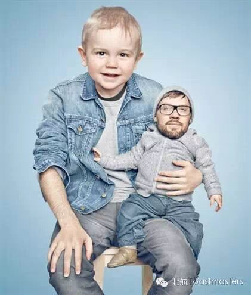

Putting in Other's Shoes
Time: Friday August.29 19:30-21:30
Venue: Room G849, New Main Building, Beihang University

Toastmaster: Junyar
Table Topic Master: Deron
Have you ever felt puzzled when someone did the things you could not understand? Have you felt sad when others misunderstood you? How do you deal with these problems? How about putting you in other's shoes? Thinking from the other's point of view, things might be different. Welcome to share your experiences and stories with us and we are waiting for you on Friday night!
Prepared Speech(two speakers)
A Better World(CC6)
Peter
Peter is a young man who loves reading. He thinks quickly and actively. He expresses profound and unique ideas in simple and humorous language. He is a rare thinker. In this meeting, he will bring us his CC6 speech called “a better world”. At first sight, this topic is so luxury, large, and level upping! What is his attitude toward this world and what a better world will be like? Let us follow the footsteps of Peter to embark on a journey of thought.
Good Night(CC7)
Keven
Sleep is quite important for human beings. Our friend Keven has a regular and healthy life style. He always gets up as the sun rises and photographs that splendid moment. Although he gets up early, he is full of energy. We really wonder how he achieves this. In this meeting he will tell us how to sleep. Let us looking forward to Keven's suggestions!

Our meeting venue is RoomG849, New Main Building, Beihang University (北航新主楼G849房间). And you can phone to Deron for help.
TEL: 180-0125-3933
See you in the meeting!
https://mp.weixin.qq.com/s/hVPUmvJXNFPGRoVZ9oUkeQ
本页为抢救式本地归档，图文已永久保存。